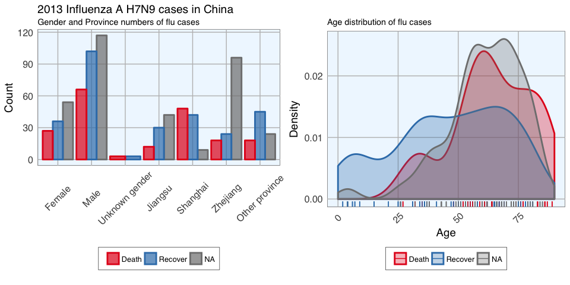
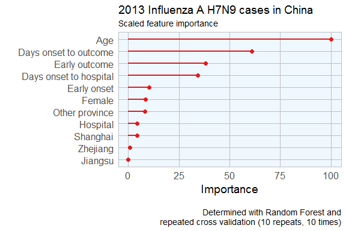
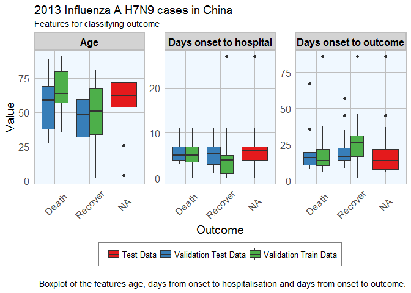
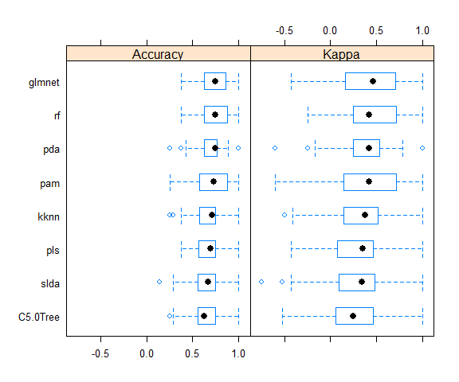
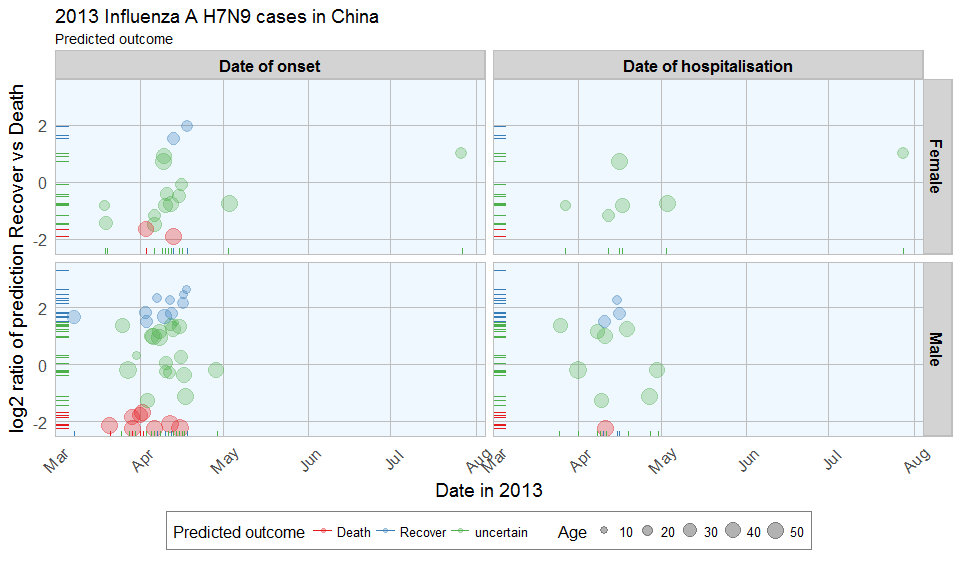

Edited on 26 December 2016
Among the many R packages, there is the outbreaks package. It contains datasets on epidemics, on of which is from the 2013 outbreak of influenza A H7N9 in China, as analysed by Kucharski et al. (2014):
A. Kucharski, H. Mills, A. Pinsent, C. Fraser, M. Van Kerkhove, C. A. Donnelly, and S. Riley. 2014. Distinguishing between reservoir exposure and human-to-human transmission for emerging pathogens using case onset data. PLOS Currents Outbreaks. Mar 7, edition 1. doi: 10.1371/currents.outbreaks.e1473d9bfc99d080ca242139a06c455f.
A. Kucharski, H. Mills, A. Pinsent, C. Fraser, M. Van Kerkhove, C. A. Donnelly, and S. Riley. 2014. Data from: Distinguishing between reservoir exposure and human-to-human transmission for emerging pathogens using case onset data. Dryad Digital Repository. http://dx.doi.org/10.5061/dryad.2g43n.
I will be using their data as an example to test whether we can use Machine Learning algorithms for predicting disease outcome.
To do so, I selected and extracted features from the raw data, including age, days between onset and outcome, gender, whether the patients were hospitalised, etc. Missing values were imputed and different model algorithms were used to predict outcome (death or recovery). The prediction accuracy, sensitivity and specificity. The thus prepared dataset was devided into training and testing subsets. The test subset contained all cases with an unknown outcome. Before I applied the models to the test data, I further split the training data into validation subsets.
The tested modeling algorithms were similarly successful at predicting the outcomes of the validation data. To decide on final classifications, I compared predictions from all models and defined the outcome “Death” or “Recovery” as a function of all models, whereas classifications with a low prediction probability were flagged as “uncertain”. Accounting for this uncertainty led to a 100% correct classification of the validation test set.
The training cases with unknown outcome were then classified based on the same algorithms. From 57 unknown cases, 14 were classified as “Recovery”, 10 as “Death” and 33 as uncertain.
In a Part 2 I am looking at how extreme gradient boosting performs on this dataset.
The data
The dataset contains case ID, date of onset, date of hospitalisation, date of outcome, gender, age, province and of course the outcome: Death or Recovery. I can already see that there are a couple of missing values in the data, which I will deal with later.
# install and load package
if (!require("outbreaks")) install.packages("outbreaks")
library(outbreaks)
fluH7N9.china.2013_backup <- fluH7N9.china.2013 # back up original dataset in case something goes awry along the way
# convert ? to NAs
fluH7N9.china.2013$age[which(fluH7N9.china.2013$age == "?")] <- NA
# create a new column with case ID
fluH7N9.china.2013$case.ID <- paste("case", fluH7N9.china.2013$case.ID, sep = "_")
head(fluH7N9.china.2013)
## case.ID date.of.onset date.of.hospitalisation date.of.outcome outcome gender age province
## 1 case_1 2013-02-19 <NA> 2013-03-04 Death m 87 Shanghai
## 2 case_2 2013-02-27 2013-03-03 2013-03-10 Death m 27 Shanghai
## 3 case_3 2013-03-09 2013-03-19 2013-04-09 Death f 35 Anhui
## 4 case_4 2013-03-19 2013-03-27 <NA> <NA> f 45 Jiangsu
## 5 case_5 2013-03-19 2013-03-30 2013-05-15 Recover f 48 Jiangsu
## 6 case_6 2013-03-21 2013-03-28 2013-04-26 Death f 32 Jiangsu
Before I start preparing the data for Machine Learning, I want to get an idea of the distribution of the data points and their different variables by plotting.
Most provinces have only a handful of cases, so I am combining them into the category “other” and keep only Jiangsu, Shanghai and Zhejian and separate provinces.
# gather for plotting with ggplot2
library(tidyr)
fluH7N9.china.2013_gather <- fluH7N9.china.2013 %>%
gather(Group, Date, date.of.onset:date.of.outcome)
# rearrange group order
fluH7N9.china.2013_gather$Group <- factor(fluH7N9.china.2013_gather$Group, levels = c("date.of.onset", "date.of.hospitalisation", "date.of.outcome"))
# rename groups
library(plyr)
fluH7N9.china.2013_gather$Group <- mapvalues(fluH7N9.china.2013_gather$Group, from = c("date.of.onset", "date.of.hospitalisation", "date.of.outcome"),
to = c("Date of onset", "Date of hospitalisation", "Date of outcome"))
# renaming provinces
fluH7N9.china.2013_gather$province <- mapvalues(fluH7N9.china.2013_gather$province,
from = c("Anhui", "Beijing", "Fujian", "Guangdong", "Hebei", "Henan", "Hunan", "Jiangxi", "Shandong", "Taiwan"),
to = rep("Other", 10))
# add a level for unknown gender
levels(fluH7N9.china.2013_gather$gender) <- c(levels(fluH7N9.china.2013_gather$gender), "unknown")
fluH7N9.china.2013_gather$gender[is.na(fluH7N9.china.2013_gather$gender)] <- "unknown"
# rearrange province order so that Other is the last
fluH7N9.china.2013_gather$province <- factor(fluH7N9.china.2013_gather$province, levels = c("Jiangsu", "Shanghai", "Zhejiang", "Other"))
# convert age to numeric
fluH7N9.china.2013_gather$age <- as.numeric(as.character(fluH7N9.china.2013_gather$age))
# preparing my ggplot2 theme of choice
library(ggplot2)
my_theme <- function(base_size = 12, base_family = "sans"){
theme_minimal(base_size = base_size, base_family = base_family) +
theme(
axis.text = element_text(size = 12),
axis.text.x = element_text(angle = 45, vjust = 0.5, hjust = 0.5),
axis.title = element_text(size = 14),
panel.grid.major = element_line(color = "grey"),
panel.grid.minor = element_blank(),
panel.background = element_rect(fill = "aliceblue"),
strip.background = element_rect(fill = "lightgrey", color = "grey", size = 1),
strip.text = element_text(face = "bold", size = 12, color = "black"),
legend.position = "bottom",
legend.justification = "top",
legend.box = "horizontal",
legend.box.background = element_rect(colour = "grey50"),
legend.background = element_blank(),
panel.border = element_rect(color = "grey", fill = NA, size = 0.5)
)
}
# plotting raw data
ggplot(data = fluH7N9.china.2013_gather, aes(x = Date, y = age, fill = outcome)) +
stat_density2d(aes(alpha = ..level..), geom = "polygon") +
geom_jitter(aes(color = outcome, shape = gender), size = 1.5) +
geom_rug(aes(color = outcome)) +
labs(
fill = "Outcome",
color = "Outcome",
alpha = "Level",
shape = "Gender",
x = "Date in 2013",
y = "Age",
title = "2013 Influenza A H7N9 cases in China",
subtitle = "Dataset from 'outbreaks' package (Kucharski et al. 2014)",
caption = ""
) +
facet_grid(Group ~ province) +
my_theme() +
scale_shape_manual(values = c(15, 16, 17)) +
scale_color_brewer(palette="Set1", na.value = "grey50") +
scale_fill_brewer(palette="Set1")

This plot shows the dates of onset, hospitalisation and outcome (if known) of each data point. Outcome is marked by color and age shown on the y-axis. Gender is marked by point shape.
The density distribution of date by age for the cases seems to indicate that older people died more frequently in the Jiangsu and Zhejiang province than in Shanghai and in other provinces.
When we look at the distribution of points along the time axis, it suggests that their might be a positive correlation between the likelihood of death and an early onset or early outcome.
I also want to know how many cases there are for each gender and province and compare the genders’ age distribution.
fluH7N9.china.2013_gather_2 <- fluH7N9.china.2013_gather[, -4] %>%
gather(group_2, value, gender:province)
fluH7N9.china.2013_gather_2$value <- mapvalues(fluH7N9.china.2013_gather_2$value, from = c("m", "f", "unknown", "Other"),
to = c("Male", "Female", "Unknown gender", "Other province"))
fluH7N9.china.2013_gather_2$value <- factor(fluH7N9.china.2013_gather_2$value,
levels = c("Female", "Male", "Unknown gender", "Jiangsu", "Shanghai", "Zhejiang", "Other province"))
p1 <- ggplot(data = fluH7N9.china.2013_gather_2, aes(x = value, fill = outcome, color = outcome)) +
geom_bar(position = "dodge", alpha = 0.7, size = 1) +
my_theme() +
scale_fill_brewer(palette="Set1", na.value = "grey50") +
scale_color_brewer(palette="Set1", na.value = "grey50") +
labs(
color = "",
fill = "",
x = "",
y = "Count",
title = "2013 Influenza A H7N9 cases in China",
subtitle = "Gender and Province numbers of flu cases",
caption = ""
)
p2 <- ggplot(data = fluH7N9.china.2013_gather, aes(x = age, fill = outcome, color = outcome)) +
geom_density(alpha = 0.3, size = 1) +
geom_rug() +
scale_color_brewer(palette="Set1", na.value = "grey50") +
scale_fill_brewer(palette="Set1", na.value = "grey50") +
my_theme() +
labs(
color = "",
fill = "",
x = "Age",
y = "Density",
title = "",
subtitle = "Age distribution of flu cases",
caption = ""
)
library(gridExtra)
library(grid)
grid.arrange(p1, p2, ncol = 2)

In the dataset, there are more male than female cases and correspondingly, we see more deaths, recoveries and unknown outcomes in men than in women. This is potentially a problem later on for modeling because the inherent likelihoods for outcome are not directly comparable between the sexes.
Most unknown outcomes were recorded in Zhejiang. Similarly to gender, we don’t have an equal distribution of data points across provinces either.
When we look at the age distribution it is obvious that people who died tended to be slightly older than those who recovered. The density curve of unknown outcomes is more similar to that of death than of recovery, suggesting that among these people there might have been more deaths than recoveries.
And lastly, I want to plot how many days passed between onset, hospitalisation and outcome for each case.
ggplot(data = fluH7N9.china.2013_gather, aes(x = Date, y = age, color = outcome)) +
geom_point(aes(shape = gender), size = 1.5, alpha = 0.6) +
geom_path(aes(group = case.ID)) +
facet_wrap( ~ province, ncol = 2) +
my_theme() +
scale_shape_manual(values = c(15, 16, 17)) +
scale_color_brewer(palette="Set1", na.value = "grey50") +
scale_fill_brewer(palette="Set1") +
labs(
color = "Outcome",
shape = "Gender",
x = "Date in 2013",
y = "Age",
title = "2013 Influenza A H7N9 cases in China",
subtitle = "Dataset from 'outbreaks' package (Kucharski et al. 2014)",
caption = "\nTime from onset of flu to outcome."
)

This plot shows that there are many missing values in the dates, so it is hard to draw a general conclusion.
Features
In Machine Learning-speak features are the variables used for model training. Using the right features dramatically influences the accuracy of the model.
Because we don’t have many features, I am keeping age as it is, but I am also generating new features:
- from the date information I am calculating the days between onset and outcome and between onset and hospitalisation
- I am converting gender into numeric values with 1 for female and 0 for male
- similarly, I am converting provinces to binary classifiers (yes == 1, no == 0) for Shanghai, Zhejiang, Jiangsu and other provinces
- the same binary classification is given for whether a case was hospitalised, and whether they had an early onset or early outcome (earlier than the median date)
# preparing the data frame for modeling
#
library(dplyr)
dataset <- fluH7N9.china.2013 %>%
mutate(hospital = as.factor(ifelse(is.na(date.of.hospitalisation), 0, 1)),
gender_f = as.factor(ifelse(gender == "f", 1, 0)),
province_Jiangsu = as.factor(ifelse(province == "Jiangsu", 1, 0)),
province_Shanghai = as.factor(ifelse(province == "Shanghai", 1, 0)),
province_Zhejiang = as.factor(ifelse(province == "Zhejiang", 1, 0)),
province_other = as.factor(ifelse(province == "Zhejiang" | province == "Jiangsu" | province == "Shanghai", 0, 1)),
days_onset_to_outcome = as.numeric(as.character(gsub(" days", "",
as.Date(as.character(date.of.outcome), format = "%Y-%m-%d") -
as.Date(as.character(date.of.onset), format = "%Y-%m-%d")))),
days_onset_to_hospital = as.numeric(as.character(gsub(" days", "",
as.Date(as.character(date.of.hospitalisation), format = "%Y-%m-%d") -
as.Date(as.character(date.of.onset), format = "%Y-%m-%d")))),
age = as.numeric(as.character(age)),
early_onset = as.factor(ifelse(date.of.onset < summary(fluH7N9.china.2013$date.of.onset)[[3]], 1, 0)),
early_outcome = as.factor(ifelse(date.of.outcome < summary(fluH7N9.china.2013$date.of.outcome)[[3]], 1, 0))) %>%
subset(select = -c(2:4, 6, 8))
rownames(dataset) <- dataset$case.ID
dataset <- dataset[, -1]
head(dataset)
## outcome age hospital gender_f province_Jiangsu province_Shanghai province_Zhejiang province_other days_onset_to_outcome days_onset_to_hospital early_onset early_outcome
## case_1 Death 87 0 0 0 1 0 0 13 NA 1 1
## case_2 Death 27 1 0 0 1 0 0 11 4 1 1
## case_3 Death 35 1 1 0 0 0 1 31 10 1 1
## case_4 <NA> 45 1 1 1 0 0 0 NA 8 1 <NA>
## case_5 Recover 48 1 1 1 0 0 0 57 11 1 0
## case_6 Death 32 1 1 1 0 0 0 36 7 1 1
Imputing missing values
When looking at the dataset I created for modeling, it is obvious that we have quite a few missing values.
The missing values from the outcome column are what I want to predict but for the rest I would either have to remove the entire row from the data or impute the missing information. I decided to try the latter with the mice package.
# impute missing data
library(mice)
dataset_impute <- mice(dataset[, -1], print = FALSE)
dataset_impute
## Multiply imputed dataset
## Call:
## mice(data = dataset[, -1], printFlag = FALSE)
## Number of multiple imputations: 5
## Missing cells per column:
## age hospital gender_f province_Jiangsu province_Shanghai province_Zhejiang province_other days_onset_to_outcome days_onset_to_hospital early_onset early_outcome
## 2 0 2 0 0 0 0 67 74 10 65
## Imputation methods:
## age hospital gender_f province_Jiangsu province_Shanghai province_Zhejiang province_other days_onset_to_outcome days_onset_to_hospital early_onset early_outcome
## "pmm" "" "logreg" "" "" "" "" "pmm" "pmm" "logreg" "logreg"
## VisitSequence:
## age gender_f days_onset_to_outcome days_onset_to_hospital early_onset early_outcome
## 1 3 8 9 10 11
## PredictorMatrix:
## age hospital gender_f province_Jiangsu province_Shanghai province_Zhejiang province_other days_onset_to_outcome days_onset_to_hospital early_onset early_outcome
## age 0 1 1 1 1 1 1 1 1 1 1
## hospital 0 0 0 0 0 0 0 0 0 0 0
## gender_f 1 1 0 1 1 1 1 1 1 1 1
## province_Jiangsu 0 0 0 0 0 0 0 0 0 0 0
## province_Shanghai 0 0 0 0 0 0 0 0 0 0 0
## province_Zhejiang 0 0 0 0 0 0 0 0 0 0 0
## province_other 0 0 0 0 0 0 0 0 0 0 0
## days_onset_to_outcome 1 1 1 1 1 1 1 0 1 1 1
## days_onset_to_hospital 1 1 1 1 1 1 1 1 0 1 1
## early_onset 1 1 1 1 1 1 1 1 1 0 1
## early_outcome 1 1 1 1 1 1 1 1 1 1 0
## Random generator seed value: NA
# recombine imputed data frame with the outcome column
dataset_complete <- merge(dataset[, 1, drop = FALSE], mice::complete(dataset_impute, 1), by = "row.names", all = TRUE)
rownames(dataset_complete) <- dataset_complete$Row.names
dataset_complete <- dataset_complete[, -1]
Test, train and validation datasets
For building the model, I am separating the imputed data frame into training and test data. Test data are the 57 cases with unknown outcome.
summary(dataset$outcome)
## Death Recover NA's
## 32 47 57
The training data will be further devided for validation of the models: 70% of the training data will be kept for model building and the remaining 30% will be used for model testing.
I am using the caret package for modeling.
train_index <- which(is.na(dataset_complete$outcome))
train_data <- dataset_complete[-train_index, ]
test_data <- dataset_complete[train_index, -1]
library(caret)
set.seed(27)
val_index <- createDataPartition(train_data$outcome, p = 0.7, list=FALSE)
val_train_data <- train_data[val_index, ]
val_test_data <- train_data[-val_index, ]
val_train_X <- val_train_data[,-1]
val_test_X <- val_test_data[,-1]
Decision trees
To get an idea about how each feature contributes to the prediction of the outcome, I first built a decision tree based on the training data using rpart and rattle.
library(rpart)
library(rattle)
library(rpart.plot)
library(RColorBrewer)
set.seed(27)
fit <- rpart(outcome ~ .,
data = train_data,
method = "class",
control = rpart.control(xval = 10, minbucket = 2, cp = 0), parms = list(split = "information"))
fancyRpartPlot(fit)

This randomly generated decision tree shows that cases with an early outcome were most likely to die when they were 68 or older, when they also had an early onset and when they were sick for fewer than 13 days. If a person was not among the first cases and was younger than 52, they had a good chance of recovering, but if they were 82 or older, they were more likely to die from the flu.
Feature Importance
Not all of the features I created will be equally important to the model. The decision tree already gave me an idea of which features might be most important but I also want to estimate feature importance using a Random Forest approach with repeated cross validation.
# prepare training scheme
control <- trainControl(method = "repeatedcv", number = 10, repeats = 10)
# train the model
set.seed(27)
model <- train(outcome ~ ., data = train_data, method = "rf", preProcess = NULL, trControl = control)
# estimate variable importance
importance <- varImp(model, scale=TRUE)
# prepare for plotting
importance_df_1 <- importance$importance
importance_df_1$group <- rownames(importance_df_1)
importance_df_1$group <- mapvalues(importance_df_1$group,
from = c("age", "hospital2", "gender_f2", "province_Jiangsu2", "province_Shanghai2", "province_Zhejiang2",
"province_other2", "days_onset_to_outcome", "days_onset_to_hospital", "early_onset2", "early_outcome2" ),
to = c("Age", "Hospital", "Female", "Jiangsu", "Shanghai", "Zhejiang",
"Other province", "Days onset to outcome", "Days onset to hospital", "Early onset", "Early outcome" ))
f = importance_df_1[order(importance_df_1$Overall, decreasing = FALSE), "group"]
importance_df_2 <- importance_df_1
importance_df_2$Overall <- 0
importance_df <- rbind(importance_df_1, importance_df_2)
# setting factor levels
importance_df <- within(importance_df, group <- factor(group, levels = f))
importance_df_1 <- within(importance_df_1, group <- factor(group, levels = f))
ggplot() +
geom_point(data = importance_df_1, aes(x = Overall, y = group, color = group), size = 2) +
geom_path(data = importance_df, aes(x = Overall, y = group, color = group, group = group), size = 1) +
scale_color_manual(values = rep(brewer.pal(1, "Set1")[1], 11)) +
my_theme() +
theme(legend.position = "none",
axis.text.x = element_text(angle = 0, vjust = 0.5, hjust = 0.5)) +
labs(
x = "Importance",
y = "",
title = "2013 Influenza A H7N9 cases in China",
subtitle = "Scaled feature importance",
caption = "\nDetermined with Random Forest and
repeated cross validation (10 repeats, 10 times)"
)

This tells me that age is the most important determining factor for predicting disease outcome, followed by days between onset an outcome, early outcome and days between onset and hospitalisation.
Feature Plot
Before I start actually building models, I want to check whether the distribution of feature values is comparable between training, validation and test datasets.
# prepare for plotting
dataset_complete_gather <- dataset_complete %>%
mutate(set = ifelse(rownames(dataset_complete) %in% rownames(test_data), "Test Data",
ifelse(rownames(dataset_complete) %in% rownames(val_train_data), "Validation Train Data",
ifelse(rownames(dataset_complete) %in% rownames(val_test_data), "Validation Test Data", "NA"))),
case_ID = rownames(.)) %>%
gather(group, value, age:early_outcome)
dataset_complete_gather$group <- mapvalues(dataset_complete_gather$group,
from = c("age", "hospital", "gender_f", "province_Jiangsu", "province_Shanghai", "province_Zhejiang",
"province_other", "days_onset_to_outcome", "days_onset_to_hospital", "early_onset", "early_outcome" ),
to = c("Age", "Hospital", "Female", "Jiangsu", "Shanghai", "Zhejiang",
"Other province", "Days onset to outcome", "Days onset to hospital", "Early onset", "Early outcome" ))
ggplot(data = dataset_complete_gather, aes(x = as.numeric(value), fill = outcome, color = outcome)) +
geom_density(alpha = 0.2) +
geom_rug() +
scale_color_brewer(palette="Set1", na.value = "grey50") +
scale_fill_brewer(palette="Set1", na.value = "grey50") +
my_theme() +
facet_wrap(set ~ group, ncol = 11, scales = "free") +
labs(
x = "Value",
y = "Density",
title = "2013 Influenza A H7N9 cases in China",
subtitle = "Features for classifying outcome",
caption = "\nDensity distribution of all features used for classification of flu outcome."
)
ggplot(subset(dataset_complete_gather, group == "Age" | group == "Days onset to hospital" | group == "Days onset to outcome"),
aes(x=outcome, y=as.numeric(value), fill=set)) + geom_boxplot() +
my_theme() +
scale_fill_brewer(palette="Set1", type = "div ") +
facet_wrap( ~ group, ncol = 3, scales = "free") +
labs(
fill = "",
x = "Outcome",
y = "Value",
title = "2013 Influenza A H7N9 cases in China",
subtitle = "Features for classifying outcome",
caption = "\nBoxplot of the features age, days from onset to hospitalisation and days from onset to outcome."
)


Luckily, the distributions looks reasonably similar between the validation and test data, except for a few outliers.
Comparing Machine Learning algorithms
Before I try to predict the outcome of the unknown cases, I am testing the models’ accuracy with the validation datasets on a couple of algorithms. I have chosen only a few more well known algorithms, but caret implements many more.
I have chose to not do any preprocessing because I was worried that the different data distributions with continuous variables (e.g. age) and binary variables (i.e. 0, 1 classification of e.g. hospitalisation) would lead to problems.
Random Forest
Random Forests predictions are based on the generation of multiple classification trees.
This model classified 14 out of 23 cases correctly.
set.seed(27)
model_rf <- caret::train(outcome ~ .,
data = val_train_data,
method = "rf",
preProcess = NULL,
trControl = trainControl(method = "repeatedcv", number = 10, repeats = 10, verboseIter = FALSE))
model_rf
## Random Forest
##
## 56 samples
## 11 predictors
## 2 classes: 'Death', 'Recover'
##
## No pre-processing
## Resampling: Cross-Validated (10 fold, repeated 10 times)
## Summary of sample sizes: 50, 50, 51, 51, 51, 50, ...
## Resampling results across tuning parameters:
##
## mtry Accuracy Kappa
## 2 0.7801905 0.5338408
## 6 0.7650952 0.4926366
## 11 0.7527619 0.4638073
##
## Accuracy was used to select the optimal model using the largest value.
## The final value used for the model was mtry = 2.
confusionMatrix(predict(model_rf, val_test_data[, -1]), val_test_data$outcome)
## Confusion Matrix and Statistics
##
## Reference
## Prediction Death Recover
## Death 4 4
## Recover 5 10
##
## Accuracy : 0.6087
## 95% CI : (0.3854, 0.8029)
## No Information Rate : 0.6087
## P-Value [Acc > NIR] : 0.5901
##
## Kappa : 0.1619
## Mcnemar's Test P-Value : 1.0000
##
## Sensitivity : 0.4444
## Specificity : 0.7143
## Pos Pred Value : 0.5000
## Neg Pred Value : 0.6667
## Prevalence : 0.3913
## Detection Rate : 0.1739
## Detection Prevalence : 0.3478
## Balanced Accuracy : 0.5794
##
## 'Positive' Class : Death
##
Elastic-Net Regularized Generalized Linear Models
Lasso or elastic net regularization for generalized linear model regression are based on linear regression models and is useful when we have feature correlation in our model.
This model classified 13 out of 23 cases correctly.
set.seed(27)
model_glmnet <- caret::train(outcome ~ .,
data = val_train_data,
method = "glmnet",
preProcess = NULL,
trControl = trainControl(method = "repeatedcv", number = 10, repeats = 10, verboseIter = FALSE))
model_glmnet
## glmnet
##
## 56 samples
## 11 predictors
## 2 classes: 'Death', 'Recover'
##
## No pre-processing
## Resampling: Cross-Validated (10 fold, repeated 10 times)
## Summary of sample sizes: 50, 50, 51, 51, 51, 50, ...
## Resampling results across tuning parameters:
##
## alpha lambda Accuracy Kappa
## 0.10 0.0005154913 0.7211905 0.4218952
## 0.10 0.0051549131 0.7189524 0.4189835
## 0.10 0.0515491312 0.7469524 0.4704687
## 0.55 0.0005154913 0.7211905 0.4218952
## 0.55 0.0051549131 0.7236190 0.4280528
## 0.55 0.0515491312 0.7531905 0.4801031
## 1.00 0.0005154913 0.7228571 0.4245618
## 1.00 0.0051549131 0.7278571 0.4361809
## 1.00 0.0515491312 0.7678571 0.5094194
##
## Accuracy was used to select the optimal model using the largest value.
## The final values used for the model were alpha = 1 and lambda = 0.05154913.
confusionMatrix(predict(model_glmnet, val_test_data[, -1]), val_test_data$outcome)
## Confusion Matrix and Statistics
##
## Reference
## Prediction Death Recover
## Death 3 4
## Recover 6 10
##
## Accuracy : 0.5652
## 95% CI : (0.3449, 0.7681)
## No Information Rate : 0.6087
## P-Value [Acc > NIR] : 0.7418
##
## Kappa : 0.0496
## Mcnemar's Test P-Value : 0.7518
##
## Sensitivity : 0.3333
## Specificity : 0.7143
## Pos Pred Value : 0.4286
## Neg Pred Value : 0.6250
## Prevalence : 0.3913
## Detection Rate : 0.1304
## Detection Prevalence : 0.3043
## Balanced Accuracy : 0.5238
##
## 'Positive' Class : Death
##
k-Nearest Neighbors
k-nearest neighbors predicts based on point distances with predefined constants.
This model classified 14 out of 23 cases correctly.
set.seed(27)
model_kknn <- caret::train(outcome ~ .,
data = val_train_data,
method = "kknn",
preProcess = NULL,
trControl = trainControl(method = "repeatedcv", number = 10, repeats = 10, verboseIter = FALSE))
model_kknn
## k-Nearest Neighbors
##
## 56 samples
## 11 predictors
## 2 classes: 'Death', 'Recover'
##
## No pre-processing
## Resampling: Cross-Validated (10 fold, repeated 10 times)
## Summary of sample sizes: 50, 50, 51, 51, 51, 50, ...
## Resampling results across tuning parameters:
##
## kmax Accuracy Kappa
## 5 0.6531905 0.2670442
## 7 0.7120476 0.4031836
## 9 0.7106190 0.4004564
##
## Tuning parameter 'distance' was held constant at a value of 2
## Tuning parameter 'kernel' was held constant at a value of optimal
## Accuracy was used to select the optimal model using the largest value.
## The final values used for the model were kmax = 7, distance = 2 and kernel = optimal.
confusionMatrix(predict(model_kknn, val_test_data[, -1]), val_test_data$outcome)
## Confusion Matrix and Statistics
##
## Reference
## Prediction Death Recover
## Death 3 3
## Recover 6 11
##
## Accuracy : 0.6087
## 95% CI : (0.3854, 0.8029)
## No Information Rate : 0.6087
## P-Value [Acc > NIR] : 0.5901
##
## Kappa : 0.1266
## Mcnemar's Test P-Value : 0.5050
##
## Sensitivity : 0.3333
## Specificity : 0.7857
## Pos Pred Value : 0.5000
## Neg Pred Value : 0.6471
## Prevalence : 0.3913
## Detection Rate : 0.1304
## Detection Prevalence : 0.2609
## Balanced Accuracy : 0.5595
##
## 'Positive' Class : Death
##
Penalized Discriminant Analysis
Penalized Discriminant Analysis is the penalized linear discriminant analysis and is also useful for when we have highly correlated features.
This model classified 14 out of 23 cases correctly.
set.seed(27)
model_pda <- caret::train(outcome ~ .,
data = val_train_data,
method = "pda",
preProcess = NULL,
trControl = trainControl(method = "repeatedcv", number = 10, repeats = 10, verboseIter = FALSE))
model_pda
## Penalized Discriminant Analysis
##
## 56 samples
## 11 predictors
## 2 classes: 'Death', 'Recover'
##
## No pre-processing
## Resampling: Cross-Validated (10 fold, repeated 10 times)
## Summary of sample sizes: 50, 50, 51, 51, 51, 50, ...
## Resampling results across tuning parameters:
##
## lambda Accuracy Kappa
## 0e+00 NaN NaN
## 1e-04 0.7255238 0.4373766
## 1e-01 0.7235238 0.4342554
##
## Accuracy was used to select the optimal model using the largest value.
## The final value used for the model was lambda = 1e-04.
confusionMatrix(predict(model_pda, val_test_data[, -1]), val_test_data$outcome)
## Confusion Matrix and Statistics
##
## Reference
## Prediction Death Recover
## Death 4 4
## Recover 5 10
##
## Accuracy : 0.6087
## 95% CI : (0.3854, 0.8029)
## No Information Rate : 0.6087
## P-Value [Acc > NIR] : 0.5901
##
## Kappa : 0.1619
## Mcnemar's Test P-Value : 1.0000
##
## Sensitivity : 0.4444
## Specificity : 0.7143
## Pos Pred Value : 0.5000
## Neg Pred Value : 0.6667
## Prevalence : 0.3913
## Detection Rate : 0.1739
## Detection Prevalence : 0.3478
## Balanced Accuracy : 0.5794
##
## 'Positive' Class : Death
##
Stabilized Linear Discriminant Analysis
Stabilized Linear Discriminant Analysis is designed for high-dimensional data and correlated co-variables.
This model classified 15 out of 23 cases correctly.
set.seed(27)
model_slda <- caret::train(outcome ~ .,
data = val_train_data,
method = "slda",
preProcess = NULL,
trControl = trainControl(method = "repeatedcv", number = 10, repeats = 10, verboseIter = FALSE))
model_slda
## Stabilized Linear Discriminant Analysis
##
## 56 samples
## 11 predictors
## 2 classes: 'Death', 'Recover'
##
## No pre-processing
## Resampling: Cross-Validated (10 fold, repeated 10 times)
## Summary of sample sizes: 50, 50, 51, 51, 51, 50, ...
## Resampling results:
##
## Accuracy Kappa
## 0.6886667 0.3512234
##
##
confusionMatrix(predict(model_slda, val_test_data[, -1]), val_test_data$outcome)
## Confusion Matrix and Statistics
##
## Reference
## Prediction Death Recover
## Death 3 2
## Recover 6 12
##
## Accuracy : 0.6522
## 95% CI : (0.4273, 0.8362)
## No Information Rate : 0.6087
## P-Value [Acc > NIR] : 0.4216
##
## Kappa : 0.2069
## Mcnemar's Test P-Value : 0.2888
##
## Sensitivity : 0.3333
## Specificity : 0.8571
## Pos Pred Value : 0.6000
## Neg Pred Value : 0.6667
## Prevalence : 0.3913
## Detection Rate : 0.1304
## Detection Prevalence : 0.2174
## Balanced Accuracy : 0.5952
##
## 'Positive' Class : Death
##
Nearest Shrunken Centroids
Nearest Shrunken Centroids computes a standardized centroid for each class and shrinks each centroid toward the overall centroid for all classes.
This model classified 15 out of 23 cases correctly.
set.seed(27)
model_pam <- caret::train(outcome ~ .,
data = val_train_data,
method = "pam",
preProcess = NULL,
trControl = trainControl(method = "repeatedcv", number = 10, repeats = 10, verboseIter = FALSE))
model_pam
## Nearest Shrunken Centroids
##
## 56 samples
## 11 predictors
## 2 classes: 'Death', 'Recover'
##
## No pre-processing
## Resampling: Cross-Validated (10 fold, repeated 10 times)
## Summary of sample sizes: 50, 50, 51, 51, 51, 50, ...
## Resampling results across tuning parameters:
##
## threshold Accuracy Kappa
## 0.1200215 0.7283333 0.4418904
## 1.7403111 0.6455714 0.2319674
## 3.3606007 0.5904762 0.0000000
##
## Accuracy was used to select the optimal model using the largest value.
## The final value used for the model was threshold = 0.1200215.
confusionMatrix(predict(model_pam, val_test_data[, -1]), val_test_data$outcome)
## Confusion Matrix and Statistics
##
## Reference
## Prediction Death Recover
## Death 4 3
## Recover 5 11
##
## Accuracy : 0.6522
## 95% CI : (0.4273, 0.8362)
## No Information Rate : 0.6087
## P-Value [Acc > NIR] : 0.4216
##
## Kappa : 0.2397
## Mcnemar's Test P-Value : 0.7237
##
## Sensitivity : 0.4444
## Specificity : 0.7857
## Pos Pred Value : 0.5714
## Neg Pred Value : 0.6875
## Prevalence : 0.3913
## Detection Rate : 0.1739
## Detection Prevalence : 0.3043
## Balanced Accuracy : 0.6151
##
## 'Positive' Class : Death
##
Single C5.0 Tree
C5.0 is another tree-based modeling algorithm.
This model classified 15 out of 23 cases correctly.
set.seed(27)
model_C5.0Tree <- caret::train(outcome ~ .,
data = val_train_data,
method = "C5.0Tree",
preProcess = NULL,
trControl = trainControl(method = "repeatedcv", number = 10, repeats = 10, verboseIter = FALSE))
model_C5.0Tree
## Single C5.0 Tree
##
## 56 samples
## 11 predictors
## 2 classes: 'Death', 'Recover'
##
## No pre-processing
## Resampling: Cross-Validated (10 fold, repeated 10 times)
## Summary of sample sizes: 50, 50, 51, 51, 51, 50, ...
## Resampling results:
##
## Accuracy Kappa
## 0.7103333 0.4047334
##
##
confusionMatrix(predict(model_C5.0Tree, val_test_data[, -1]), val_test_data$outcome)
## Confusion Matrix and Statistics
##
## Reference
## Prediction Death Recover
## Death 5 4
## Recover 4 10
##
## Accuracy : 0.6522
## 95% CI : (0.4273, 0.8362)
## No Information Rate : 0.6087
## P-Value [Acc > NIR] : 0.4216
##
## Kappa : 0.2698
## Mcnemar's Test P-Value : 1.0000
##
## Sensitivity : 0.5556
## Specificity : 0.7143
## Pos Pred Value : 0.5556
## Neg Pred Value : 0.7143
## Prevalence : 0.3913
## Detection Rate : 0.2174
## Detection Prevalence : 0.3913
## Balanced Accuracy : 0.6349
##
## 'Positive' Class : Death
##
Partial Least Squares
Partial least squares regression combined principal component analysis and multiple regression and is useful for modeling with correlated features.
This model classified 15 out of 23 cases correctly.
set.seed(27)
model_pls <- caret::train(outcome ~ .,
data = val_train_data,
method = "pls",
preProcess = NULL,
trControl = trainControl(method = "repeatedcv", number = 10, repeats = 10, verboseIter = FALSE))
model_pls
## Partial Least Squares
##
## 56 samples
## 11 predictors
## 2 classes: 'Death', 'Recover'
##
## No pre-processing
## Resampling: Cross-Validated (10 fold, repeated 10 times)
## Summary of sample sizes: 50, 50, 51, 51, 51, 50, ...
## Resampling results across tuning parameters:
##
## ncomp Accuracy Kappa
## 1 0.6198571 0.2112982
## 2 0.6376190 0.2436222
## 3 0.6773810 0.3305780
##
## Accuracy was used to select the optimal model using the largest value.
## The final value used for the model was ncomp = 3.
confusionMatrix(predict(model_pls, val_test_data[, -1]), val_test_data$outcome)
## Confusion Matrix and Statistics
##
## Reference
## Prediction Death Recover
## Death 3 2
## Recover 6 12
##
## Accuracy : 0.6522
## 95% CI : (0.4273, 0.8362)
## No Information Rate : 0.6087
## P-Value [Acc > NIR] : 0.4216
##
## Kappa : 0.2069
## Mcnemar's Test P-Value : 0.2888
##
## Sensitivity : 0.3333
## Specificity : 0.8571
## Pos Pred Value : 0.6000
## Neg Pred Value : 0.6667
## Prevalence : 0.3913
## Detection Rate : 0.1304
## Detection Prevalence : 0.2174
## Balanced Accuracy : 0.5952
##
## 'Positive' Class : Death
##
Comparing accuracy of models
All models were similarly accurate.
# Create a list of models
models <- list(rf = model_rf, glmnet = model_glmnet, kknn = model_kknn, pda = model_pda, slda = model_slda,
pam = model_pam, C5.0Tree = model_C5.0Tree, pls = model_pls)
# Resample the models
resample_results <- resamples(models)
# Generate a summary
summary(resample_results, metric = c("Kappa", "Accuracy"))
##
## Call:
## summary.resamples(object = resample_results, metric = c("Kappa", "Accuracy"))
##
## Models: rf, glmnet, kknn, pda, slda, pam, C5.0Tree, pls
## Number of resamples: 100
##
## Kappa
## Min. 1st Qu. Median Mean 3rd Qu. Max. NA's
## rf -0.3636 0.3214 0.5714 0.5338 0.6800 1 0
## glmnet -0.3636 0.2768 0.5455 0.5094 0.6667 1 0
## kknn -0.3636 0.1667 0.5035 0.4032 0.6282 1 0
## pda -0.6667 0.2431 0.5455 0.4374 0.6667 1 0
## slda -0.5217 0.0000 0.4308 0.3512 0.6667 1 0
## pam -0.5000 0.2292 0.5455 0.4419 0.6667 1 0
## C5.0Tree -0.4286 0.1667 0.4167 0.4047 0.6154 1 0
## pls -0.6667 0.0000 0.3333 0.3306 0.6282 1 0
##
## Accuracy
## Min. 1st Qu. Median Mean 3rd Qu. Max. NA's
## rf 0.4000 0.6667 0.8000 0.7802 0.8393 1 0
## glmnet 0.4000 0.6500 0.8000 0.7679 0.8333 1 0
## kknn 0.3333 0.6000 0.7571 0.7120 0.8333 1 0
## pda 0.2000 0.6000 0.8000 0.7255 0.8333 1 0
## slda 0.2000 0.6000 0.6905 0.6887 0.8333 1 0
## pam 0.2000 0.6000 0.8000 0.7283 0.8333 1 0
## C5.0Tree 0.2000 0.6000 0.7143 0.7103 0.8333 1 0
## pls 0.1429 0.5929 0.6667 0.6774 0.8333 1 0
bwplot(resample_results , metric = c("Kappa","Accuracy"))

Combined results of predicting validation test samples
To compare the predictions from all models, I summed up the prediction probabilities for Death and Recovery from all models and calculated the log2 of the ratio between the summed probabilities for Recovery by the summed probabilities for Death. All cases with a log2 ratio bigger than 1.5 were defined as Recover, cases with a log2 ratio below -1.5 were defined as Death, and the remaining cases were defined as uncertain.
results <- data.frame(randomForest = predict(model_rf, newdata = val_test_data[, -1], type="prob"),
glmnet = predict(model_glmnet, newdata = val_test_data[, -1], type="prob"),
kknn = predict(model_kknn, newdata = val_test_data[, -1], type="prob"),
pda = predict(model_pda, newdata = val_test_data[, -1], type="prob"),
slda = predict(model_slda, newdata = val_test_data[, -1], type="prob"),
pam = predict(model_pam, newdata = val_test_data[, -1], type="prob"),
C5.0Tree = predict(model_C5.0Tree, newdata = val_test_data[, -1], type="prob"),
pls = predict(model_pls, newdata = val_test_data[, -1], type="prob"))
results$sum_Death <- rowSums(results[, grep("Death", colnames(results))])
results$sum_Recover <- rowSums(results[, grep("Recover", colnames(results))])
results$log2_ratio <- log2(results$sum_Recover/results$sum_Death)
results$true_outcome <- val_test_data$outcome
results$pred_outcome <- ifelse(results$log2_ratio > 1.5, "Recover", ifelse(results$log2_ratio < -1.5, "Death", "uncertain"))
results$prediction <- ifelse(results$pred_outcome == results$true_outcome, "CORRECT",
ifelse(results$pred_outcome == "uncertain", "uncertain", "wrong"))
results[, -c(1:16)]
## sum_Death sum_Recover log2_ratio true_outcome pred_outcome prediction
## case_123 2.2236374 5.776363 1.37723972 Death uncertain uncertain
## case_127 0.7522674 7.247733 3.26821230 Recover Recover CORRECT
## case_128 2.4448101 5.555190 1.18411381 Recover uncertain uncertain
## case_14 2.9135620 5.086438 0.80387172 Recover uncertain uncertain
## case_19 2.2113377 5.788662 1.38831062 Death uncertain uncertain
## case_2 3.6899508 4.310049 0.22410277 Death uncertain uncertain
## case_20 4.5621189 3.437881 -0.40818442 Recover uncertain uncertain
## case_21 4.9960238 3.003976 -0.73390698 Recover uncertain uncertain
## case_34 6.1430233 1.856977 -1.72599312 Death Death CORRECT
## case_37 0.8717595 7.128241 3.03154401 Recover Recover CORRECT
## case_5 1.7574945 6.242505 1.82860496 Recover Recover CORRECT
## case_51 3.8917736 4.108226 0.07808791 Recover uncertain uncertain
## case_55 3.1548368 4.845163 0.61897986 Recover uncertain uncertain
## case_6 3.5163388 4.483661 0.35060317 Death uncertain uncertain
## case_61 5.0803241 2.919676 -0.79911232 Death uncertain uncertain
## case_65 1.1282313 6.871769 2.60661863 Recover Recover CORRECT
## case_74 5.3438427 2.656157 -1.00853699 Recover uncertain uncertain
## case_78 3.2183947 4.781605 0.57115378 Death uncertain uncertain
## case_79 1.9521617 6.047838 1.63134700 Recover Recover CORRECT
## case_8 3.6106045 4.389395 0.28178184 Death uncertain uncertain
## case_87 4.9712879 3.028712 -0.71491522 Death uncertain uncertain
## case_91 1.8648837 6.135116 1.71800508 Recover Recover CORRECT
## case_94 2.1198087 5.880191 1.47192901 Recover uncertain uncertain
All predictions based on all models were either correct or uncertain.
Predicting unknown outcomes
The above models will now be used to predict the outcome of cases with unknown fate.
set.seed(27)
model_rf <- caret::train(outcome ~ .,
data = train_data,
method = "rf",
preProcess = NULL,
trControl = trainControl(method = "repeatedcv", number = 10, repeats = 10, verboseIter = FALSE))
model_glmnet <- caret::train(outcome ~ .,
data = train_data,
method = "glmnet",
preProcess = NULL,
trControl = trainControl(method = "repeatedcv", number = 10, repeats = 10, verboseIter = FALSE))
model_kknn <- caret::train(outcome ~ .,
data = train_data,
method = "kknn",
preProcess = NULL,
trControl = trainControl(method = "repeatedcv", number = 10, repeats = 10, verboseIter = FALSE))
model_pda <- caret::train(outcome ~ .,
data = train_data,
method = "pda",
preProcess = NULL,
trControl = trainControl(method = "repeatedcv", number = 10, repeats = 10, verboseIter = FALSE))
model_slda <- caret::train(outcome ~ .,
data = train_data,
method = "slda",
preProcess = NULL,
trControl = trainControl(method = "repeatedcv", number = 10, repeats = 10, verboseIter = FALSE))
model_pam <- caret::train(outcome ~ .,
data = train_data,
method = "pam",
preProcess = NULL,
trControl = trainControl(method = "repeatedcv", number = 10, repeats = 10, verboseIter = FALSE))
model_C5.0Tree <- caret::train(outcome ~ .,
data = train_data,
method = "C5.0Tree",
preProcess = NULL,
trControl = trainControl(method = "repeatedcv", number = 10, repeats = 10, verboseIter = FALSE))
model_pls <- caret::train(outcome ~ .,
data = train_data,
method = "pls",
preProcess = NULL,
trControl = trainControl(method = "repeatedcv", number = 10, repeats = 10, verboseIter = FALSE))
models <- list(rf = model_rf, glmnet = model_glmnet, kknn = model_kknn, pda = model_pda, slda = model_slda,
pam = model_pam, C5.0Tree = model_C5.0Tree, pls = model_pls)
# Resample the models
resample_results <- resamples(models)
bwplot(resample_results , metric = c("Kappa","Accuracy"))

Here again, the accuracy is similar in all models.
The final results are calculate as described above.
results <- data.frame(randomForest = predict(model_rf, newdata = test_data, type="prob"),
glmnet = predict(model_glmnet, newdata = test_data, type="prob"),
kknn = predict(model_kknn, newdata = test_data, type="prob"),
pda = predict(model_pda, newdata = test_data, type="prob"),
slda = predict(model_slda, newdata = test_data, type="prob"),
pam = predict(model_pam, newdata = test_data, type="prob"),
C5.0Tree = predict(model_C5.0Tree, newdata = test_data, type="prob"),
pls = predict(model_pls, newdata = test_data, type="prob"))
results$sum_Death <- rowSums(results[, grep("Death", colnames(results))])
results$sum_Recover <- rowSums(results[, grep("Recover", colnames(results))])
results$log2_ratio <- log2(results$sum_Recover/results$sum_Death)
results$predicted_outcome <- ifelse(results$log2_ratio > 1.5, "Recover", ifelse(results$log2_ratio < -1.5, "Death", "uncertain"))
results[, -c(1:16)]
## sum_Death sum_Recover log2_ratio predicted_outcome
## case_100 3.6707808 4.329219 0.23801986 uncertain
## case_101 6.3194220 1.680578 -1.91083509 Death
## case_102 6.4960471 1.503953 -2.11080274 Death
## case_103 2.3877223 5.612278 1.23295134 uncertain
## case_104 4.1254604 3.874540 -0.09053024 uncertain
## case_105 2.1082161 5.891784 1.48268174 uncertain
## case_108 6.5941436 1.405856 -2.22973606 Death
## case_109 2.2780779 5.721922 1.32868278 uncertain
## case_110 1.7853361 6.214664 1.79948072 Recover
## case_112 4.5102439 3.489756 -0.37007925 uncertain
## case_113 4.7047554 3.295245 -0.51373420 uncertain
## case_114 1.6397105 6.360290 1.95565132 Recover
## case_115 1.2351519 6.764848 2.45336902 Recover
## case_118 1.4675571 6.532443 2.15420601 Recover
## case_120 1.9322149 6.067785 1.65091447 Recover
## case_122 1.1165786 6.883421 2.62404109 Recover
## case_126 5.4933927 2.506607 -1.13196145 uncertain
## case_130 4.3035732 3.696427 -0.21940367 uncertain
## case_132 5.0166184 2.983382 -0.74976671 uncertain
## case_136 2.6824566 5.317543 0.98720505 uncertain
## case_15 5.8545370 2.145463 -1.44826607 uncertain
## case_16 6.5063794 1.493621 -2.12304122 Death
## case_22 4.2929861 3.707014 -0.21172398 uncertain
## case_28 6.6129447 1.387055 -2.25326754 Death
## case_31 6.2625800 1.737420 -1.84981057 Death
## case_32 6.0986316 1.901368 -1.68144746 Death
## case_38 1.7581540 6.241846 1.82791134 Recover
## case_39 2.4765188 5.523481 1.15726428 uncertain
## case_4 5.1309910 2.869009 -0.83868503 uncertain
## case_40 6.6069297 1.393070 -2.24571191 Death
## case_41 5.5499144 2.450086 -1.17963336 uncertain
## case_42 2.0709160 5.929084 1.51754019 Recover
## case_47 6.1988812 1.801119 -1.78311450 Death
## case_48 5.6500772 2.349923 -1.26565724 uncertain
## case_52 5.9096543 2.090346 -1.49933214 uncertain
## case_54 2.6763066 5.323693 0.99218409 uncertain
## case_56 2.6826414 5.317359 0.98705557 uncertain
## case_62 6.0722552 1.927745 -1.65531833 Death
## case_63 3.9541381 4.045862 0.03308379 uncertain
## case_66 5.8320010 2.167999 -1.42762690 uncertain
## case_67 2.1732059 5.826794 1.42287745 uncertain
## case_68 4.3464174 3.653583 -0.25051491 uncertain
## case_69 1.8902845 6.109715 1.69250181 Recover
## case_70 4.5986242 3.401376 -0.43508393 uncertain
## case_71 2.7966938 5.203306 0.89570626 uncertain
## case_80 2.7270986 5.272901 0.95123017 uncertain
## case_84 1.9485253 6.051475 1.63490411 Recover
## case_85 3.0076953 4.992305 0.73104755 uncertain
## case_86 2.0417802 5.958220 1.54505376 Recover
## case_88 0.7285419 7.271458 3.31916083 Recover
## case_9 2.2188620 5.781138 1.38153353 uncertain
## case_90 1.3973262 6.602674 2.24038155 Recover
## case_92 5.0994993 2.900501 -0.81405366 uncertain
## case_93 4.3979048 3.602095 -0.28798006 uncertain
## case_95 3.5561792 4.443821 0.32147260 uncertain
## case_96 1.3359082 6.664092 2.31858744 Recover
## case_99 5.0776686 2.922331 -0.79704644 uncertain
From 57 cases, 14 were defined as Recover, 10 as Death and 33 as uncertain.
results_combined <- merge(results[, -c(1:16)], fluH7N9.china.2013[which(fluH7N9.china.2013$case.ID %in% rownames(results)), ],
by.x = "row.names", by.y = "case.ID")
results_combined <- results_combined[, -c(2, 3, 8, 9)]
results_combined_gather <- results_combined %>%
gather(group_dates, date, date.of.onset:date.of.hospitalisation)
results_combined_gather$group_dates <- factor(results_combined_gather$group_dates, levels = c("date.of.onset", "date.of.hospitalisation"))
results_combined_gather$group_dates <- mapvalues(results_combined_gather$group_dates, from = c("date.of.onset", "date.of.hospitalisation"),
to = c("Date of onset", "Date of hospitalisation"))
results_combined_gather$gender <- mapvalues(results_combined_gather$gender, from = c("f", "m"),
to = c("Female", "Male"))
levels(results_combined_gather$gender) <- c(levels(results_combined_gather$gender), "unknown")
results_combined_gather$gender[is.na(results_combined_gather$gender)] <- "unknown"
results_combined_gather$age <- as.numeric(as.character(results_combined_gather$age))
ggplot(data = results_combined_gather, aes(x = date, y = log2_ratio, color = predicted_outcome)) +
geom_jitter(aes(size = age), alpha = 0.3) +
geom_rug() +
facet_grid(gender ~ group_dates) +
labs(
color = "Predicted outcome",
size = "Age",
x = "Date in 2013",
y = "log2 ratio of prediction Recover vs Death",
title = "2013 Influenza A H7N9 cases in China",
subtitle = "Predicted outcome",
caption = ""
) +
my_theme() +
scale_color_brewer(palette="Set1") +
scale_fill_brewer(palette="Set1")

The comparison of date of onset, data of hospitalisation, gender and age with predicted outcome shows that predicted deaths were associated with older age than predicted Recoveries. Date of onset does not show an obvious bias in either direction.
Conclusions
This dataset posed a couple of difficulties to begin with, like unequal distribution of data points across variables and missing data. This makes the modeling inherently prone to flaws. However, real life data isn’t perfect either, so I went ahead and tested the modeling success anyway.
By accounting for uncertain classification with low predictions probability, the validation data could be classified accurately. However, for a more accurate model, these few cases don’t give enough information to reliably predict the outcome. More cases, more information (i.e. more features) and fewer missing data would improve the modeling outcome.
Also, this example is only applicable for this specific case of flu. In order to be able to draw more general conclusions about flu outcome, other cases and additional information, for example on medical parameters like preexisting medical conditions, disase parameters, demographic information, etc. would be necessary.
All in all, this dataset served as a nice example of the possibilities (and pitfalls) of machine learning applications and showcases a basic workflow for building prediction models with R.
For a comparison of feature selection methods see here.
If you see any mistakes or have tips and tricks for improvement, please don’t hesitate to let me know! Thanks. :-)
If you are interested in more machine learning posts, check out the category listing for machine_learning.
sessionInfo()
## R version 3.3.2 (2016-10-31)
## Platform: x86_64-w64-mingw32/x64 (64-bit)
## Running under: Windows 7 x64 (build 7601) Service Pack 1
##
## locale:
## [1] LC_COLLATE=English_United States.1252 LC_CTYPE=English_United States.1252 LC_MONETARY=English_United States.1252 LC_NUMERIC=C LC_TIME=English_United States.1252
##
## attached base packages:
## [1] grid stats graphics grDevices utils datasets methods base
##
## other attached packages:
## [1] pls_2.5-0 C50_0.1.0-24 pamr_1.55 survival_2.40-1 cluster_2.0.5 ipred_0.9-5 mda_0.4-9 class_7.3-14 kknn_1.3.1 glmnet_2.0-5 foreach_1.4.3 Matrix_1.2-7.1 randomForest_4.6-12 RColorBrewer_1.1-2 rpart.plot_2.1.0 rattle_4.1.0 rpart_4.1-10 caret_6.0-73 lattice_0.20-34 mice_2.25 Rcpp_0.12.7 dplyr_0.5.0 gridExtra_2.2.1 ggplot2_2.2.0 plyr_1.8.4 tidyr_0.6.0 outbreaks_1.0.0
##
## loaded via a namespace (and not attached):
## [1] RGtk2_2.20.31 assertthat_0.1 digest_0.6.10 R6_2.2.0 MatrixModels_0.4-1 stats4_3.3.2 evaluate_0.10 e1071_1.6-7 lazyeval_0.2.0 minqa_1.2.4 SparseM_1.74 car_2.1-3 nloptr_1.0.4 partykit_1.1-1 rmarkdown_1.1 labeling_0.3 splines_3.3.2 lme4_1.1-12 stringr_1.1.0 igraph_1.0.1 munsell_0.4.3 compiler_3.3.2 mgcv_1.8-16 htmltools_0.3.5 nnet_7.3-12 tibble_1.2 prodlim_1.5.7 codetools_0.2-15 MASS_7.3-45 ModelMetrics_1.1.0 nlme_3.1-128 gtable_0.2.0 DBI_0.5-1 magrittr_1.5 scales_0.4.1 stringi_1.1.2 reshape2_1.4.2 Formula_1.2-1 lava_1.4.5 iterators_1.0.8 tools_3.3.2 parallel_3.3.2 pbkrtest_0.4-6 yaml_2.1.14 colorspace_1.3-0 knitr_1.15 quantreg_5.29